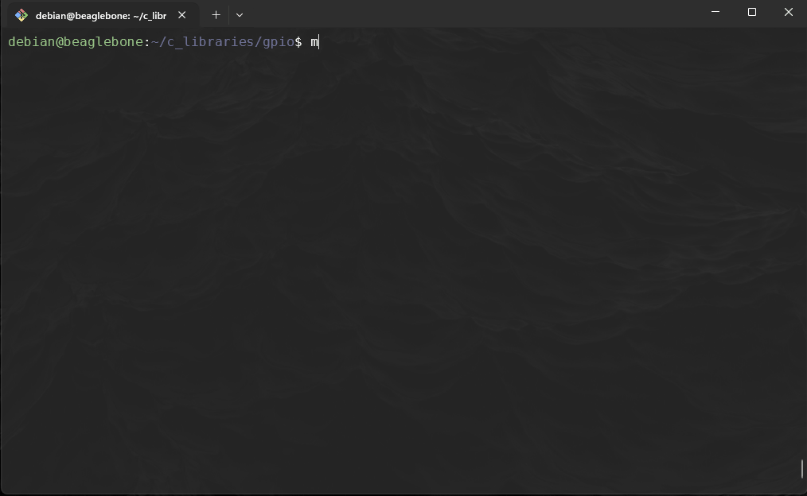
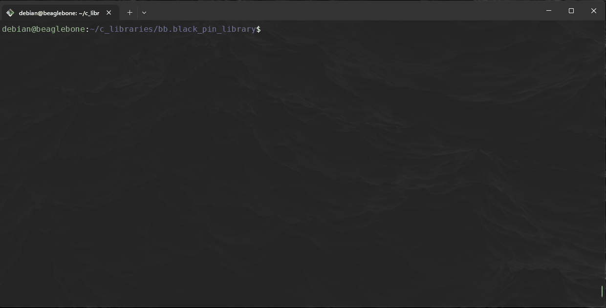

libioctrl
- Make sure you have completed the following chapters:
In this chapter we are going to combine our previous source code into a centeralised directory.
1. Setting up the libioctrl source code:
-
Create a new directory in home called
libioctrl: -
We need to copy the
adc.{c/h},gpio.{c/h}andpwm.{c/h}from the respective directories into two new child directories inside oflibioctrl,srcandinclude:Repeat for each of the other libraries we had made earlier.
-
You should have the following structure:
$ ls -l ~/libioctrl/* libioctrl/include: total 12 -rw-r--r-- 1 debian debian 685 Apr 14 19:25 adc.h -rw-r--r-- 1 debian debian 2557 Apr 14 20:35 gpio.h -rw-r--r-- 1 debian debian 1636 Apr 14 20:35 pwm.h libioctrl/src: total 12 -rw-r--r-- 1 debian debian 1288 Apr 14 19:24 adc.c -rw-r--r-- 1 debian debian 3559 Apr 14 19:46 gpio.c -rw-r--r-- 1 debian debian 2490 Apr 14 19:24 pwm.c -
Now make a new
libioctrl.hinside theinclude/and fill the following: -
Replace the
#include "adc.h",#include "gpio.h"and#include "pwm.h"inside the respective.cfiles:Repeat for the other
.cfiles -
Next we need to update some variable names to deal with the issue of multiple declarations when compiling. Inside
include/pwm.hchange the following, we are only appendingPWMtoPinMap:Old:
Suppressed code [15 lines]...
// Structure to hold PWM mapping information typedef struct { char physical_pin[10]; // Physical pin on the BeagleBone Black (e.g., "P9_16") char pwm_chip_channel[10]; // PWM chip and channel (e.g., "4:1") } PinMap; ... // Define the pin_map array with physical pins and their corresponding PWM chip:channel PinMap phy_pin_map[] = { {"P9_16", "4:1"}, // eHRPWM1B {"P9_14", "4:0"}, // eHRPWM1A {"P9_21", "1:1"}, // eHRPWM0B {"P9_22", "1:0"}, // eHRPWM0A {"P8_13", "7:1"}, // eHRPWM2B {"P8_19", "7:0"}, // eHRPWM2A {"P9_28", "3:0"}, // eCAP1 {"P9_42", "0:0"} // eCAP0 };New:
Suppressed code [15 lines]...
// Structure to hold PWM mapping information typedef struct { char physical_pin[10]; // Physical pin on the BeagleBone Black (e.g., "P9_16") char pwm_chip_channel[10]; // PWM chip and channel (e.g., "4:1") } PWMPinMap; ... // Define the pin_map array with physical pins and their corresponding PWM chip:channel PWMPinMap phy_pin_map[] = { {"P9_16", "4:1"}, // eHRPWM1B {"P9_14", "4:0"}, // eHRPWM1A {"P9_21", "1:1"}, // eHRPWM0B {"P9_22", "1:0"}, // eHRPWM0A {"P8_13", "7:1"}, // eHRPWM2B {"P8_19", "7:0"}, // eHRPWM2A {"P9_28", "3:0"}, // eCAP1 {"P9_42", "0:0"} // eCAP0 };Update the
src/pwm.cto reference thePWMPinMapinsidesizeof(...): -
Next we need to update some variable names to deal with the issue of multiple declarations when compiling. Inside
include/gpio.hchange the following, we are only appendingGPIOtoPinMapandgpio_topin_map:Old
Suppressed code [10 lines]...
// Define a simple mapping array for P8 and P9 pin names to GPIO numbers typedef struct { char pin_name[6]; unsigned int gpio_number; } PinMap; ... // Static array to map pin names to GPIO numbers PinMap gpio_pin_map[] = { {"P8_31", 10}, {"P8_32", 11}, {"P9_31", 110}, {"P9_29", 111}, ... }New
Suppressed code [15 lines]...
// Define a simple mapping array for P8 and P9 pin names to GPIO numbers typedef struct { char pin_name[6]; unsigned int gpio_number; } GPIOPinMap; ... // Static array to map pin names to GPIO numbers GPIOPinMap gpio_pin_map[] = { {"P8_31", 10}, {"P8_32", 11}, {"P9_31", 110}, {"P9_29", 111}, ... }Update the
src/gpio.cto reference thegpio_pin_mapandGPIOPinMapinsidesizeof(...), remember to replace all the instances ofpin_mapin the below function togpio_pin_map:// Function to find GPIO number from pin name int find_gpio_number(const char *pin_name) { for (int i = 0; i < sizeof(gpio_pin_map) / sizeof(GPIOPinMap); i++) { if (strcmp(gpio_pin_map[i].pin_name, pin_name) == 0) { return gpio_pin_map[i].gpio_number; } } return -1; // Return -1 if the pin is not found }
2: Make with a Makefile
-
Before running make for
libioctrl, we should remove all current libaries from before. For each original library,adclib,gpiolib,pwmlibor whether you made them runmake uninstallandmake cleanin each one:
-
Build a Makefile and fill with the following:
Suppressed code [55 lines]...
# Compiler and flags CC = gcc CFLAGS = -Wall -Werror -fPIC -I./include # Include headers AR = ar ARFLAGS = rcs PREFIX = /usr INCLUDEDIR = $(PREFIX)/include LIBDIR = $(PREFIX)/lib # Directories SRCDIR = ./src OBJDIR = ./obj # Library names TARGET_STATIC = libioctrl.a TARGET_SHARED = libioctrl.so # Source files for each component SRC = $(SRCDIR)/gpio.c $(SRCDIR)/pwm.c $(SRCDIR)/adc.c OBJ = $(patsubst $(SRCDIR)/%.c, $(OBJDIR)/%.o, $(SRC)) # Default target: Build both libraries all: $(TARGET_STATIC) $(TARGET_SHARED) # Compile source files into object files $(OBJDIR)/%.o: $(SRCDIR)/%.c @mkdir -p $(OBJDIR) $(CC) $(CFLAGS) -c $< -o $@ # Create the static library $(TARGET_STATIC): $(OBJ) $(AR) $(ARFLAGS) $@ $(OBJ) # Create the shared library $(TARGET_SHARED): $(OBJ) $(CC) -shared -o $@ $(OBJ) # Clean up build artifacts clean: rm -rf $(OBJDIR) $(TARGET_STATIC) $(TARGET_SHARED) # Install libraries and headers install: $(TARGET_STATIC) $(TARGET_SHARED) sudo cp include/gpio.h include/pwm.h include/adc.h include/libioctrl.h $(INCLUDEDIR)/ sudo cp $(TARGET_STATIC) $(TARGET_SHARED) $(LIBDIR)/ sudo ldconfig # Uninstall libraries and headers uninstall: sudo rm -f $(INCLUDEDIR)/gpio.h $(INCLUDEDIR)/pwm.h $(INCLUDEDIR)/adc.h $(INCLUDEDIR)/libioctrl.h sudo rm -f $(LIBDIR)/$(TARGET_STATIC) $(LIBDIR)/$(TARGET_SHARED) $(OBJDIR) sudo ldconfig # Phony targets .PHONY: all clean install uninstall -
We need to remove all reference to libraries created before, navigate to
adc,gpioandpwmdirectories and run: -
Go back to the
libioctrland runmake:path/to/libioctrl$ make install gcc -Wall -Werror -fPIC -I./include -c src/gpio.c -o obj/gpio.o gcc -Wall -Werror -fPIC -I./include -c src/pwm.c -o obj/pwm.o gcc -Wall -Werror -fPIC -I./include -c src/adc.c -o obj/adc.o ar rcs libioctrl.a ./obj/gpio.o ./obj/pwm.o ./obj/adc.o gcc -shared -o libioctrl.so ./obj/gpio.o ./obj/pwm.o ./obj/adc.o sudo cp include/gpio.h include/pwm.h include/adc.h include/libioctrl.h /usr/include/ sudo cp libioctrl.a libioctrl.so /usr/lib/ sudo ldconfig ... -
Breaking down the output of
make install:Object file compilation:
-
The
gcccommand is compiling each source file (src/gpio.c,src/pwm.c, andsrc/adc.c) into object files (obj/gpio.o,obj/pwm.o, andobj/adc.o), and it uses the appropriate flags (-Wall,-Werror,-fPIC,-I./include).
Creating the static library:
-
The
ar rcscommand is creating the static librarylibioctrl.aby combining the compiled object filesgpio.o,pwm.o, andadc.o.
Creating the shared library:
-
The
gcc -sharedcommand is creating the shared librarylibioctrl.soby linking the same object filesgpio.o,pwm.o, andadc.o
System wide availability:
-
This command copies the header files (
gpio.h,pwm.h,adc.h, andlibioctrl.h) to the system's/usr/include/directory. This makes the header files available system-wide, allowing programs to include these headers when building applications that use the library. -
This command copies the static (
libioctrl.a) and shared (libioctrl.so) versions of the libioctrl library to/usr/lib/, which is a standard system library directory. This allows programs to link against the library when building. -
This command updates the system's dynamic linker cache. It ensures that the system is aware of the newly installed shared libraries (e.g., libioctrl.so) so that applications can find and use the shared library at runtime
-

Using our new library
-
Update any of the following tests we ran before;
adc2pwm.c,adc_continous_read,adc_read,blinkandpwm_test:In this example I will update the
adc_read.cheaders and part of theMakefile:adc_read.cMakefileYou should repeat for the others, and remember to
make cleanbefore runningmakefor each of these programs to remove original exe.
Fork and Clone Libioctrl library
-
Incase it doesn't work as intended, you can fork and download the
libioctrllibrary from GitHub: -
Clone the forked repo:
git clone git@github.com:YOURUSERNAME/bb.black_pin_library -
cdto the parent directory of where you cloned the repo using shell copy command,scp:
-
You should then be able to install the library via the
bash install.shscript within the repo: